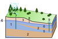

groundwater
matter

Source: Wikipedia
Occurs in:
- groundwater__head
- groundwater__recharge_volume_flux
- groundwater__initial_head
- groundwater__horizontal_anisotropy_factor
- groundwater__primary_storage_coefficient
- groundwater__horizontal_transmissivity
- groundwater__horizontal_hydraulic_conductivity
- groundwater__vertical_hydraulic_conductivity
- groundwater__secondary_storage_coefficient
- groundwater_well__recharge_volume_flux
- model_grid_cell_boundary_groundwater__interfacial_hydraulic_conductance
- groundwater__constant_head
- model_grid_cell~from-row-below_groundwater__volume_flux
- groundwater_surface__reduction_of_elevation
- model_grid_layer_groundwater__vertical_displacement